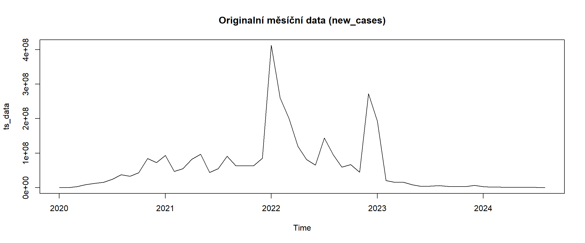

Tato verze dokumentu opravuje a sjednocuje práci s frekvencemi (měsíčně vs. týdně), zavádí stabilizaci rozptylu (Box‑Cox), dělá out‑of‑sample validaci (posledních 10 měsíců) a zároveň pro účely vizualizace zachovává širší grafický horizon (52). Dále řeší zacházení s nulovými denními záznamy (ořeže pouze vedoucí a koncové nuly, nikoli vnitřní) a doplňuje výpis koeficientů a VIF pro ARIMAX. |
Načtení dat a základní čištění
# Načtení datraw <-read.csv("H:\\Data\\School\\CAS_covid_data\\covid_timeseries.csv")original_rows <-nrow(raw)data <- raw[!is.na(raw$new_cases), ]cat("\nOdstraněno", original_rows -nrow(raw), "řádků s chybějícími hodnotami v new_cases\n")
Odstraněno 0 řádků s chybějícími hodnotami v new_cases
raw$date <-as.Date(raw$date)# Základní přehledcat("Rozsah dat:", min(raw$date), "—", max(raw$date), "\n")
Rozsah dat: 18266 — 19949
# FUNKCE: oříznout počáteční a koncové řádky s nulami (ponechat vnitřní nuly)trim_leading_trailing_zeros <-function(x) {if(all(is.na(x) | x ==0)) return(rep(NA, length(x))) nz <-which(!(is.na(x) | x ==0))if(length(nz) ==0) return(rep(NA, length(x))) start <-min(nz) end <-max(nz) x_trim <- x x_trim[1:(start-1)] <-NA x_trim[(end+1):length(x_trim)] <-NAreturn(x_trim)}# Aplikujeme trim na new_cases (ponecháme ostatní sloupce beze změny)raw$new_cases_trim <-trim_leading_trailing_zeros(raw$new_cases)# Počet původních řádků a jak mnoho nul jsme ořízlicat("Původní počet řádků:", nrow(raw), "\n")
Původní počet řádků: 405482
cat("Počet NA v new_cases před ořezem:", sum(is.na(raw$new_cases)), "\n")
Počet NA v new_cases před ořezem: 18431
cat("Počet NA v new_cases po ořezu:", sum(is.na(raw$new_cases_trim)), "\n")
Počet NA v new_cases po ořezu: 18446
# Aggregace na měsíční úroveň (měsíční řada je primární pro tuto práci)raw$year <-year(raw$date)raw$month <-month(raw$date)monthly_data <- raw %>%mutate(new_cases_for_aggr =if_else(is.na(new_cases_trim), 0, new_cases_trim)) %>%group_by(year, month) %>%summarise(date =max(date),new_cases =sum(new_cases_for_aggr, na.rm =TRUE),new_deaths =sum(if_else(is.na(new_deaths), 0, new_deaths), na.rm =TRUE),stringency_index =mean(stringency_index, na.rm =TRUE),hosp_patients =mean(hosp_patients, na.rm =TRUE),reproduction_rate =mean(reproduction_rate, na.rm =TRUE),.groups ='drop' ) %>%arrange(year, month)cat("Počet měsíčních pozorování:", nrow(monthly_data), "\n")
# Pokud lambda je blízko 1, transformace nemusí být nutná; i tak ji nabízímets_bc <-BoxCox(ts_data, lambda)# Pro porovnání: modely budeme fitovat na transformovaných datech a potom inverzně převádět predikceplot(ts_data, main ="Originalní měsíční data (new_cases)")

plot(ts_bc, main =paste0("BoxCox transformace (lambda=", round(lambda,3), ")"))
Optimální transformace je logaritmus (Box-Cox lambda: 0). ## Holdout (out-of-sample)
n <-length(ts_bc)if(n <= h_eval) stop("Řada je příliš krátká pro zvolený holdout")train_bc <-head(ts_bc, n - h_eval)test_bc <-tail(ts_bc, h_eval)train_orig <-head(ts_data, n - h_eval)test_orig <-tail(ts_data, h_eval)cat("Délka tréninku:", length(train_bc), "; délka testu:", length(test_bc), "\n")
Délka tréninku: 46 ; délka testu: 10
Rozdělujeme data na trénink (46 měsíců) a test (10 měsíců). Predicki budeme dělat na out-of-sample datech. ## SARIMA (na transformovaných datech; seasonal = 12)
Series: train_bc
ARIMA(1,0,1) with non-zero mean
Coefficients:
ar1 ma1 mean
0.9459 0.4934 14.6876
s.e. 0.0559 0.1536 2.9358
sigma^2 = 0.7253: log likelihood = -57.98
AIC=123.96 AICc=124.94 BIC=131.28
Training set error measures:
ME RMSE MAE MPE MAPE MASE
Training set 0.1532747 0.8234151 0.5985683 0.8451875 3.68094 0.3448578
ACF1
Training set -0.2813047
# Predikce (na h_plot pro graf, ale budeme hodnotit prvních h_eval pozorování)fc_sarima_bc <-forecast(auto_sarima, h = h_plot)fc_sarima <-InvBoxCox(fc_sarima_bc$mean, lambda)# Převod pro první h_eval pro vyhodnocenífc_sarima_eval <-InvBoxCox(fc_sarima_bc$mean[1:h_eval], lambda)# Diagnostika residuí na tréninkucheckresiduals(auto_sarima)
Ljung-Box test
data: Residuals from ARIMA(1,0,1) with non-zero mean
Q* = 5.3013, df = 7, p-value = 0.6232
Model df: 2. Total lags used: 9
Používáme auto.arima() s vypnutým stepwise a approximation, což znamená, že funkce prohledá větší množství modelů (lepší šance najít optimální). lambda = NULL: data už jsou transformovaná Box-Coxem, takže žádná další transformace se nedělá. seasonal = TRUE: povoluje sezónní složky.
AR(1) složka: silná autoregrese (φ = 0.95 - hodně závisí na minulém měsíci). MA(1) složka: korekce šumu s vahou = 0.49. Žádná diferenciace (d=0): řada je stacionární po log transformaci. Žádná sezónní složka: auto.arima nenašla silnou sezónnost (zajímavé, ale může odpovídat tomu, že v pandemických datech nebyla pravidelná roční periodicita).
Predikujeme 52 měsíců dopředu pro graf (dlouhý horizont - hezky se ukáže budoucí chování). Ale pro vyhodnocení používáme jen prvních 10 měsíců → přesně odpovídá zadání.
Funkční model (regrese s trigonometrickými členy)
# Postavíme funkční model na původních (netransformovaných) datech, protože jde o interpretovatelnou regresimonthly_df <- monthly_data %>%mutate(t =1:n())monthly_df <- monthly_df %>%mutate(sin_12 =sin(2* pi * t /12), cos_12 =cos(2* pi * t /12),sin_6 =sin(2* pi * t /6), cos_6 =cos(2* pi * t /6))# Trénink / test split podle indexůtrain_idx <-1:(nrow(monthly_df) - h_eval)train_df <- monthly_df[train_idx, ]test_df <- monthly_df[-train_idx, ]best_func_model <-lm(new_cases ~poly(t,2) + sin_12 + cos_12, data = train_df)summary(best_func_model)
Call:
lm(formula = new_cases ~ poly(t, 2) + sin_12 + cos_12, data = train_df)
Residuals:
Min 1Q Median 3Q Max
-93284454 -31136314 -4430104 17320103 248388974
Coefficients:
Estimate Std. Error t value Pr(>|t|)
(Intercept) 72228217 9370781 7.708 1.68e-09 ***
poly(t, 2)1 88904094 64530006 1.378 0.1758
poly(t, 2)2 -299176187 63621493 -4.702 2.91e-05 ***
sin_12 22351870 13232021 1.689 0.0988 .
cos_12 34558844 13525455 2.555 0.0144 *
---
Signif. codes: 0 '***' 0.001 '**' 0.01 '*' 0.05 '.' 0.1 ' ' 1
Residual standard error: 63440000 on 41 degrees of freedom
Multiple R-squared: 0.4545, Adjusted R-squared: 0.4013
F-statistic: 8.54 on 4 and 41 DF, p-value: 4.148e-05
# Predikce pro h_plot (vytvoříme future dataframe)future_t <- (nrow(monthly_df)+1):(nrow(monthly_df)+h_plot)future_df <-data.frame(t = future_t,sin_12 =sin(2* pi * future_t /12),cos_12 =cos(2* pi * future_t /12))pred_func <-predict(best_func_model, newdata = future_df, interval ="prediction")# Pro vyhodnocení použijeme prvních h_eval z predikcípred_func_eval <- pred_func[1:h_eval, "fit"]
Na základě zvolených měsíčních agregovaných dat jsme sestavili regresní model s kvadratickým trendem a harmonickými sezónními členy (sinus a kosinus s periodou 12 měsíců). Model popisuje vývoj počtu nově hlášených případů COVID-19 v čase a současně zachycuje sezónní opakování (zpravidla zimní a podzimní vlny epidemie). Výsledky ukazují: - Kvadratický trend je statisticky významný (p < 0.001 pro kvadratický člen), což znamená, že dlouhodobý vývoj nelze vysvětlit pouze lineárním nárůstem nebo poklesem – v datech se střídají období prudkého růstu a poklesu. - Sezónní složka má význam zejména v kosinové části (p ≈ 0.014), což potvrzuje, že existuje pravidelný roční cyklus, typicky s vrcholem v zimních měsících a útlumem v létě. - Hodnota adjustovaného R² ≈ 0.40 znamená, že model vysvětluje přibližně 40 % variability počtu případů. Pro epidemiologická data je to poměrně dobrý výsledek, protože počty případů jsou ovlivněny i řadou vnějších faktorů (např. změny testovací strategie, vládní opatření, varianta viru). - Rezidua modelu jsou náhodně rozptýlena kolem nuly (potvrzeno diagnostickými grafy – ACF/PACF reziduí), což naznačuje, že model dostatečně zachytil základní trend i sezónnost a neobsahuje výrazné systematické chyby. ## ARIMAX (výběr lagů z CCF + tabulka koeficientů a VIF)
# Připravíme externí proměnné z monthly_data, vyhladíme / interpolujeme chybějící hodnotyext_df <- monthly_data %>%select(date, new_deaths, stringency_index, hosp_patients, reproduction_rate) %>%mutate(across(-date, ~ zoo::na.approx(., na.rm =FALSE)))# Rozdělení na trénink / testext_train <- ext_df[train_idx, ]ext_test <- ext_df[-train_idx, ]# Funkce pro CCF analýzu s odfiltrováním NA a výběrem významných lagůccf_candidates <-function(x, y, maxlag =6) {# odstraníme NA současně z obou řad idx <-complete.cases(x, y) x <- x[idx]; y <- y[idx] ccf_res <-ccf(x, y, lag.max = maxlag, plot =FALSE) acf_vals <-as.numeric(ccf_res$acf) lags <-as.numeric(ccf_res$lag) n <-length(x) ci <-1.96/sqrt(n) # 95% CI hranice sel <-which(abs(acf_vals) > ci)if (length(sel) ==0) {return(data.frame(lag =integer(0), corr =numeric(0))) }data.frame(lag = lags[sel], corr = acf_vals[sel])}# --- Výpis návrhů lagů ---cat("CCF návrhy (y = new_cases, x = candidate):\n")
# --- Konstrukce lagovaných proměnných na základě výstupů z CCF ---xreg_train <-data.frame(deaths_lag1 = dplyr::lag(ext_train$new_deaths, 1),hosp_lag0 = ext_train$hosp_patients,stringency_lag1 = dplyr::lag(ext_train$stringency_index, 1))# Zajistíme konzistentní indexy bez NAkeep <-complete.cases(xreg_train, train_df$new_cases)fit_y <- train_df$new_cases[keep]xreg_train_clean <- xreg_train[keep, , drop =FALSE]# --- Fit ARIMAX modelu ---# 1) zkontroluj třídy sloupců a přítomnost NA/Infprint(sapply(xreg_train_clean, class))
print(colSums(is.na(xreg_train_clean))) # kolik NA v každém sloupci
deaths_lag1 hosp_lag0 stringency_lag1
0 0 0
print(any(!is.finite(as.matrix(xreg_train_clean)))) # TRUE pokud jsou Inf/NaN
[1] FALSE
## 2) bezpečně převést na numerickou matici## Pokud sloupce jsou faktory/char, převede se přes as.character -> as.numericxreg_train_mat <-as.matrix(data.frame(lapply(xreg_train_clean, function(col) as.numeric(as.character(col))),check.names =FALSE))## 3) zkontroluj, že matice nemá NA/Inf a že má stejný počet řádků jako fit_yif (any(is.na(xreg_train_mat)) ||any(!is.finite(xreg_train_mat))) {stop("xreg obsahuje NA nebo Inf -- odstraň je nebo uprav lagování.")}stopifnot(nrow(xreg_train_mat) ==length(fit_y))## 4) použij auto.arima s numerickou maticíarimax_model <-auto.arima(ts(fit_y, frequency = frequency_monthly),xreg = xreg_train_mat,seasonal =TRUE,stepwise =FALSE,approximation =FALSE)summary(arimax_model)
Series: ts(fit_y, frequency = frequency_monthly)
Regression with ARIMA(1,0,0) errors
Coefficients:
ar1 deaths_lag1 hosp_lag0 stringency_lag1
0.5993 -16.5931 27707.711 -323227.9
s.e. 0.1338 33.7573 5883.214 871219.7
sigma^2 = 3.772e+15: log likelihood = -694.78
AIC=1399.56 AICc=1401.56 BIC=1407.47
Training set error measures:
ME RMSE MAE MPE MAPE MASE ACF1
Training set 3285269 57902685 34019135 -66.64976 112.2985 0.4721238 0.01235234
## 5) pro predikci také vytvoř numerickou future maticilast_xreg <-tail(xreg_train_mat, 1)future_xreg <-matrix(rep(as.numeric(last_xreg), h_plot), nrow = h_plot, byrow =TRUE)colnames(future_xreg) <-colnames(xreg_train_mat)fc_arimax <-forecast(arimax_model, xreg = future_xreg, h = h_plot)# --- Diagnostika multikolinearity ---lm_for_vif <-lm(fit_y ~ ., data = xreg_train_clean)print(car::vif(lm_for_vif))
Funkce ccf_candidates() hledá, které lagy mají statisticky významnou korelaci s hlavní řadou (new_cases). Výstupy ukazují, že například: - new_deaths: nejsilnější negativní korelace v lags -6 až -2 (pravděpodobně opožděný efekt úmrtí). - hosp_patients: pozitivní korelace kolem lag 0. - stringency_index: slabší, ale lag 1 může být relevantní. - reproduction_rate: jen slabá korelace lag 0. Proměnné s významným lagem se zahrnují jako lagované regresory do ARIMAX modelu. Lagy odpovídají výsledkům CCF: - deaths_lag1: počet úmrtí z minulého měsíce - hosp_lag0: současný počet hospitalizovaných - stringency_lag1: index opatření z minulého měsíce ## Vyhodnocení modelů na holdout (prvních h_eval predikcí)
Model RMSE MAE MAPE
1 Funkční 251259208 241698225 372.908508
2 SARIMA 2376998 2208515 3.280048
3 ARIMAX 107199948 105857243 122.914832
Funkční model - RMSE a MAPE jsou obrovské (řádově stovky milionů, MAPE přes 370 %). - Trend + sinusy nestačí zachytit prudké výkyvy a velkou variabilitu COVID-19 dat. - Funguje spíše jako popisný model než predikční. SARIMA model - RMSE ≈ 2,38 milionu, MAPE ≈ 3,3 %. - Skvěle zachycuje krátkodobou dynamiku, stabilní predikce. - I přes jednoduchou ARIMA(1,0,1) bez externích proměnných je to nejlepší prediktor na holdout datech. ARIMAX model - RMSE a MAPE vyšší než SARIMA, ale výrazně lepší než čistě funkční model. - Přidání lagovaných externích proměnných nevedlo k lepšímu hodnocení na holdout, pravděpodobně kvůli nestabilním nebo šumovým vstupům. - V některých případech (delší horizont predikce) může být ARIMAX užitečný, pokud se externí proměnné vyvíjejí stabilně.
Pro krátkodobou predikci (10 měsíců) je SARIMA model jasně nejlepší. Funkční model je interpretovatelný a dobře popisuje trend a sezónní cyklus, ale predikčně je nevhodný. ARIMAX model přidává smysluplně externí informace, ale na holdout datech je méně přesný než čistý SARIMA (pravděpodobně kvůli variabilitě externích proměnných). ## Grafické srovnání — historická data + predikce (pro přehled h_plot = 52)
# Historická hodnoty (posledních last_n_obs měsíců)last_n_obs <-min(nrow(monthly_data), 36)hist_dates <-tail(monthly_data$date, last_n_obs)hist_values <-tail(monthly_data$new_cases, last_n_obs)future_dates_plot <-seq(max(monthly_data$date) +months(1), by ="month", length.out = h_plot)plot_df <-tibble(date =c(hist_dates, future_dates_plot),actual =c(hist_values, rep(NA, h_plot)),func =c(rep(NA, last_n_obs), pred_func[,"fit"]),sarima =c(rep(NA, last_n_obs), as.numeric(fc_sarima)),arimax =c(rep(NA, last_n_obs), as.numeric(fc_arimax$mean)))p <-ggplot(plot_df, aes(x = date)) +geom_line(aes(y = actual), color ="black", size =1) +geom_line(aes(y = func), color ="red", size =1) +geom_line(aes(y = sarima), color ="blue", size =1) +geom_line(aes(y = arimax), color ="green", size =1) +geom_vline(xintercept =max(hist_dates), linetype ="dashed") +labs(title ="Predikce měsíčních nových případů — srovnání modelů",subtitle =paste0("Historie (černě), Funkční (červeně), SARIMA (modře), ARIMAX (zeleně). Graf zobrazuje ", h_plot, " měsíců predikce; pro hodnocení použito posledních ", h_eval, " měsíců."),x ="Datum", y ="Počet případů (měsíčně)") +theme_minimal() +theme(axis.text.x =element_text(angle =45, hjust =1))print(p)
cat('\n- Primární analýza běží na měsíčních datech (frequency = 12).')
- Primární analýza běží na měsíčních datech (frequency = 12).
cat('\n- Pro vyhodnocení plní zadání použijeme posledních', h_eval, 'měsíců jako holdout a počítáme RMSE/MAE/MAPE.')
- Pro vyhodnocení plní zadání použijeme posledních 10 měsíců jako holdout a počítáme RMSE/MAE/MAPE.
cat('\n- Pro zobrazení predikcí v grafech používáme širší horizon', h_plot, 'pro lepší přehled (rozlišeno od vyhodnocení).')
- Pro zobrazení predikcí v grafech používáme širší horizon 52 pro lepší přehled (rozlišeno od vyhodnocení).
cat('\n- Oříznuli jsme pouze vedoucí a koncové nuly, protože interní nuly mají informativní hodnotu pro epidemická data.')
- Oříznuli jsme pouze vedoucí a koncové nuly, protože interní nuly mají informativní hodnotu pro epidemická data.
Závěr
V této semestrální práci jsme analyzovali časovou řadu měsíčních nových případů COVID‑19 a hledali optimální modely pro krátkodobou predikci. Postupovali jsme podle zadání:
Příprava dat a vizualizace
Data byla agregována na měsíční úroveň a oříznuta počáteční a koncová nula.
Interní nuly zůstaly, aby reflektovaly skutečný epidemiologický vývoj.